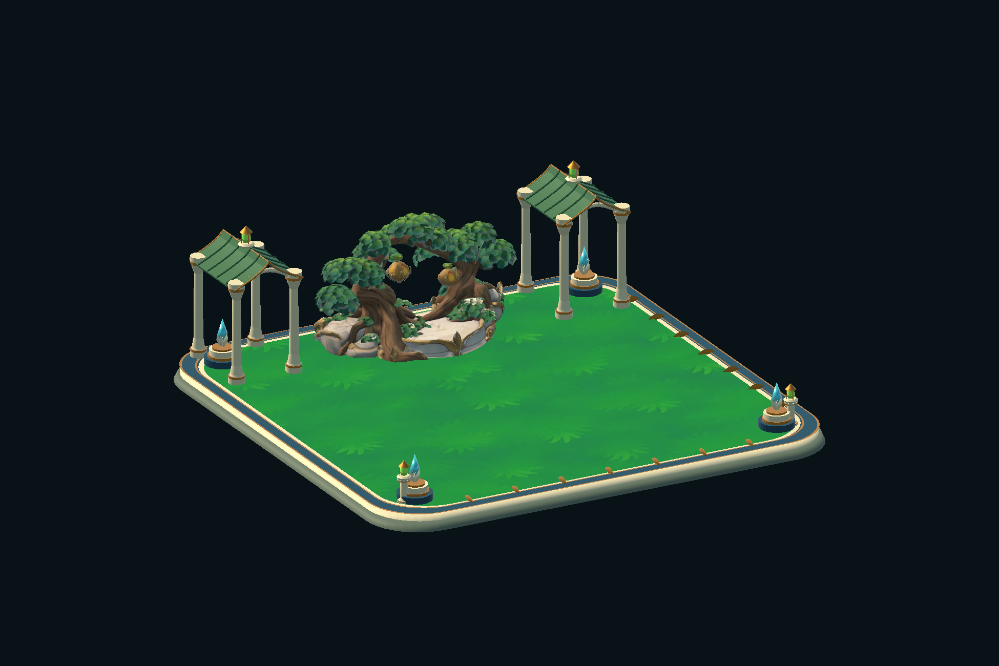
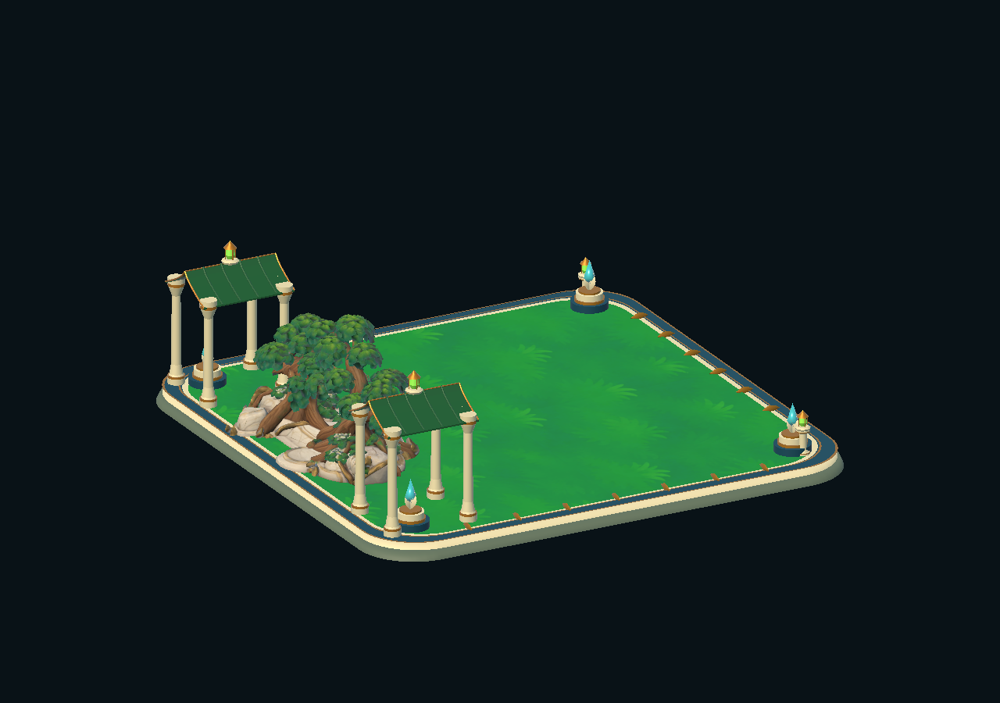
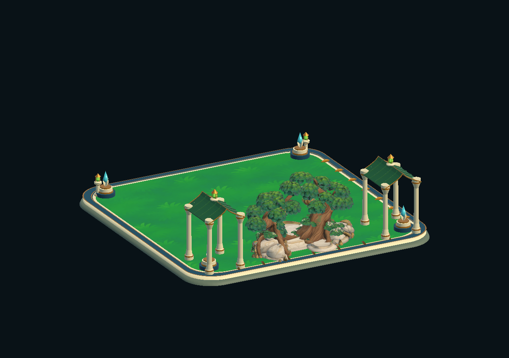

STATIC FANTASY DECOR · UNITY URP
Nature Sanctuary
A quiet landmark for a fantasy garden.
An ornamental tree, two green-roof pavilions and an ivory-and-gold platform, assembled as one decorative Unity prefab.
Submitted for Unity review

25,445triangles
14mesh parts
URPUnity materials
$8.99USD · listed price
01 / OTHER VIEWS
The supplied object, from other angles.
Screenshots of the imported asset, not concept illustrations.


02 / INCLUDED
A self-contained decorative asset.
Editable OBJ mesh parts, eleven materials, five PNG textures, a painted-surface shader, a viewing scene and setup documentation.
Each product is supplied separately. The model and viewing scene work without the NYRAEVON game or other portfolio products.
Content & limitations
- Materials
- 11
- PNG textures
- 5
- Editable geometry
- OBJ
- Tested version
- Unity 6000.5.9f1 · URP 17.5
- Platform tested
- Windows · Direct3D 11
One static composition, not a modular construction kit or a habitat simulation. No creatures, animation, gameplay, sound or LODs. Coarse box collision; adapt it for detailed navigation.
Built-in, HDRP, mobile, VR and consoles are not certified. Some generated close-range details remain irregular or fused. Independent Unity import and editor rendering were checked; standalone player builds are not certified.
AI-assisted production
The base tree sanctuary and textures were generated with Meshy. Painted meadow and cliff textures were made with ImageGen. Project architecture, materials and integration were developed with AI assistance.